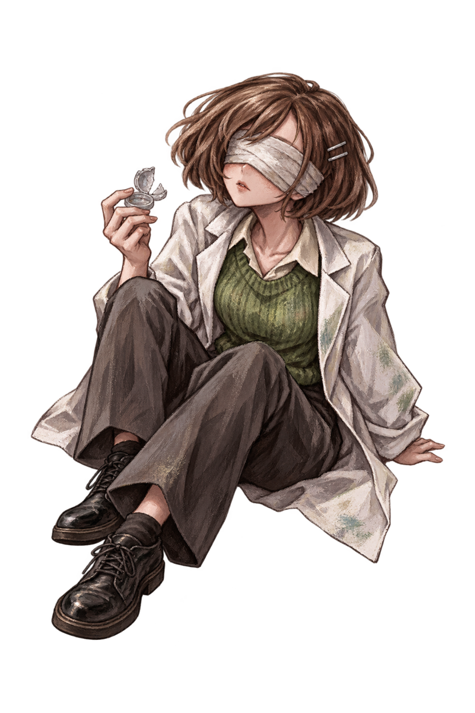
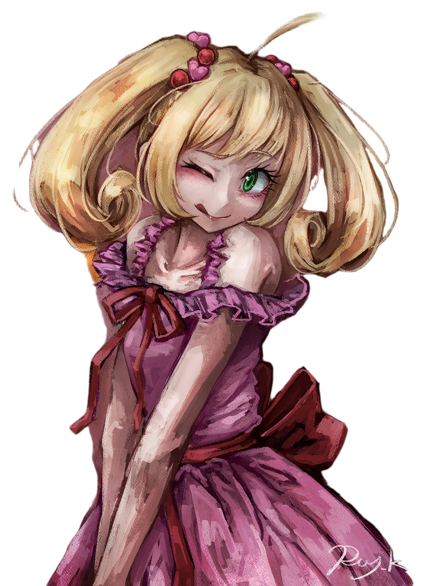
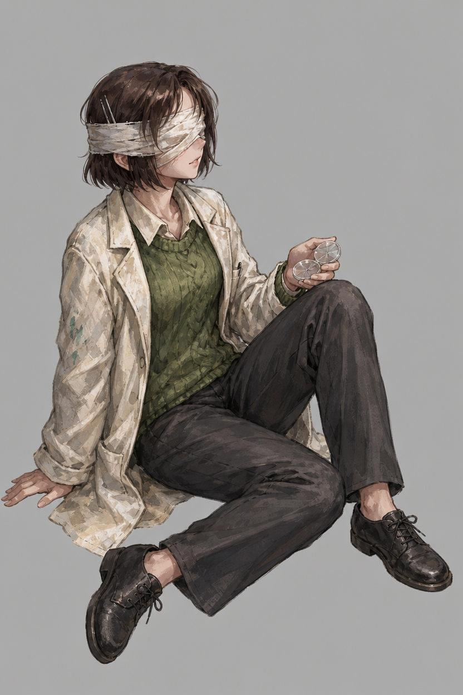
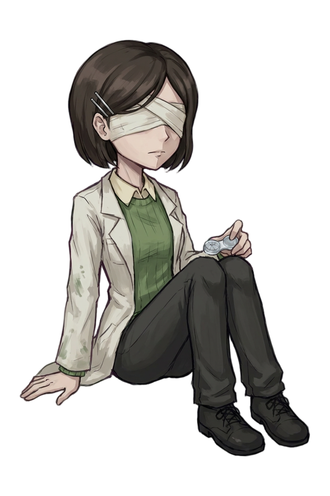
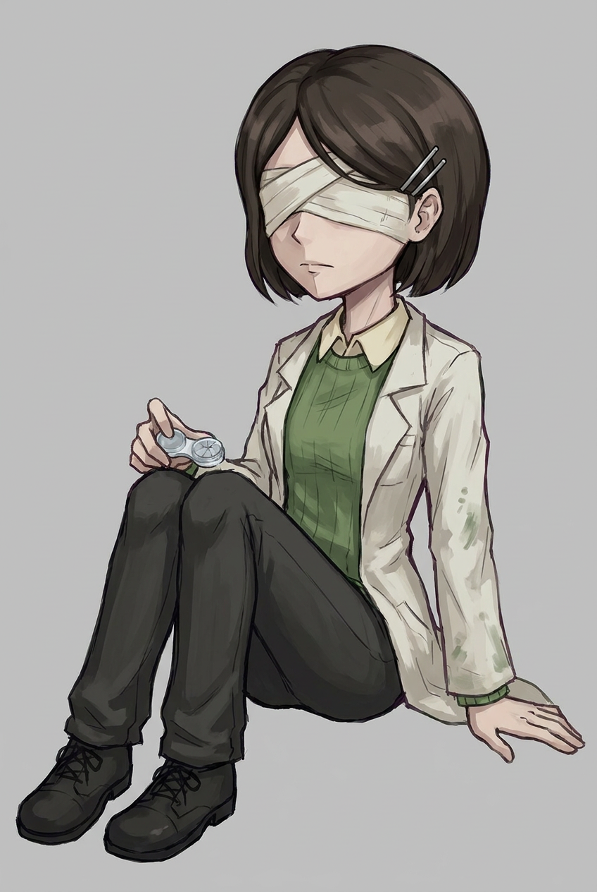
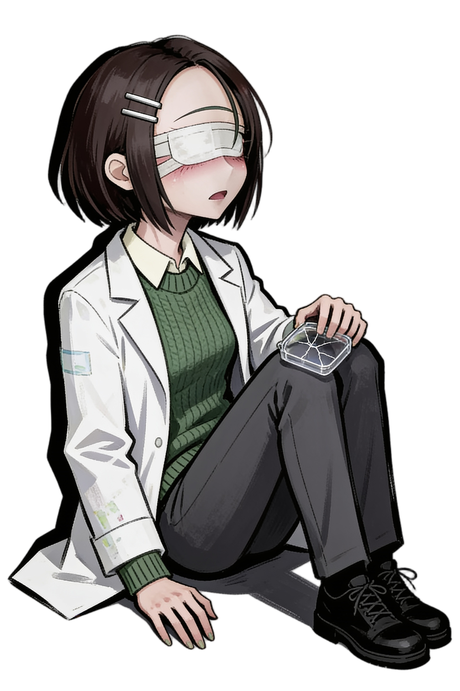
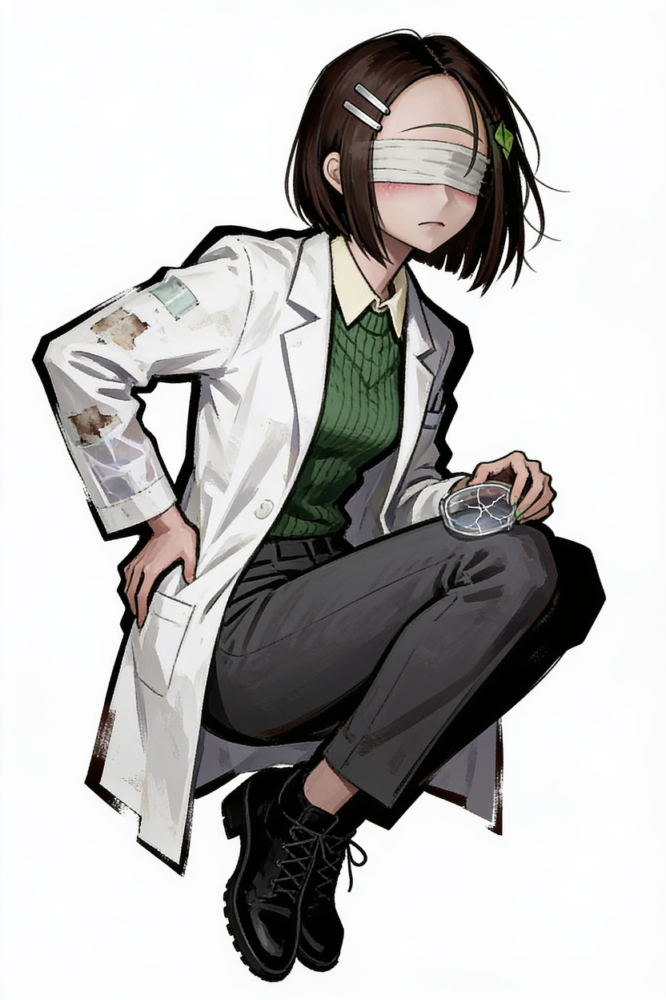
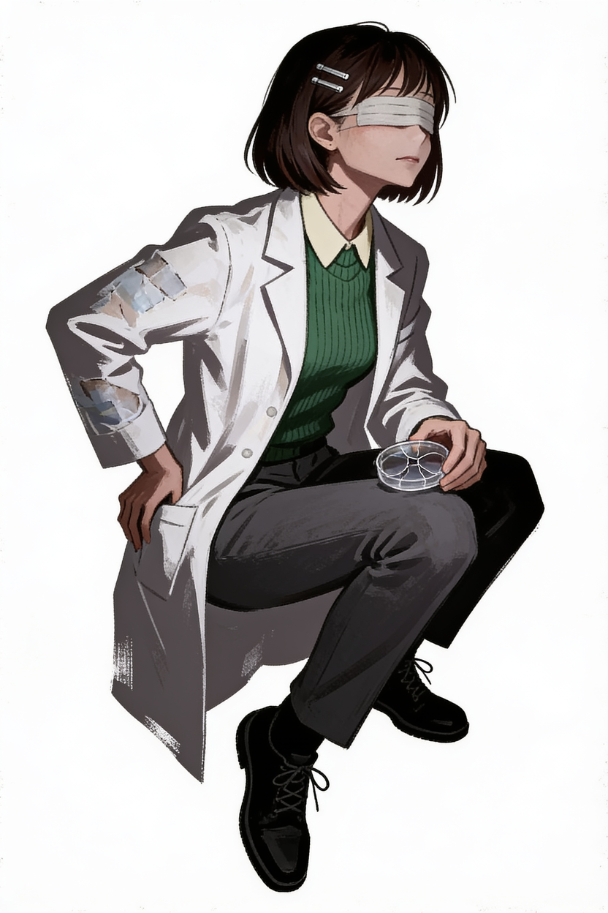
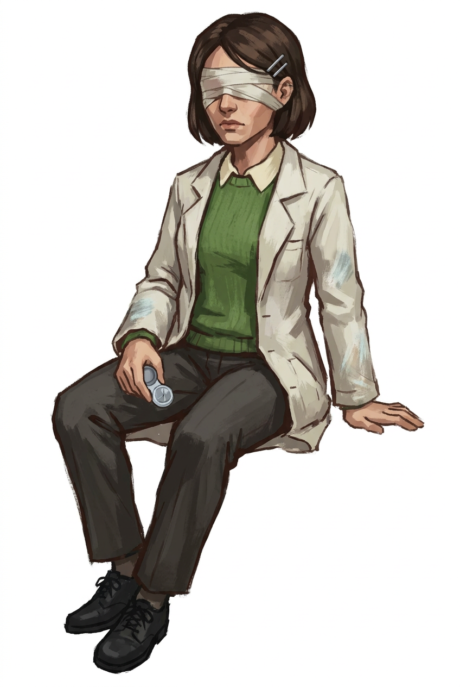
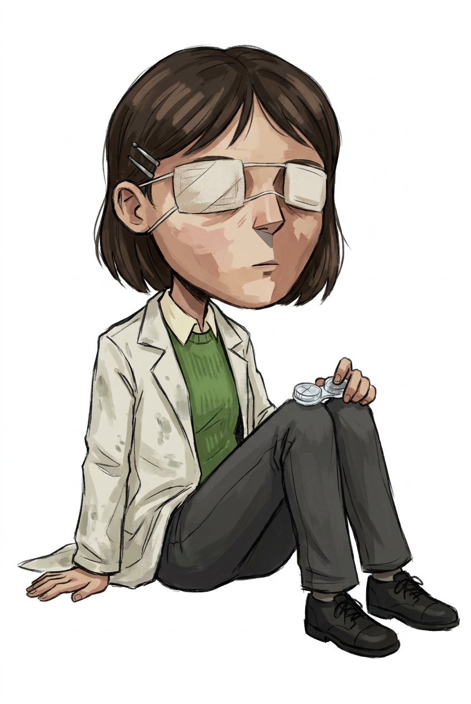

새 컨텍스트 · 내장 imagegen

A 누끼만 사용. 과거 대화·프롬프트 미상속. 여백 정리본. 렌즈집 소재와 가장자리 잘림은 남은 검토 항목.
생성 원본 열기 · 독립 작성 프롬프트2026-09-26 · 최신: B 제외 / 새 컨텍스트 내장 imagegen · 사용자 최종 승인 전
기계 보정은 무료 처리. 원본은 보존. 04~07은 원인 확인용이며 최종 자산이 아닙니다.

A 누끼만 사용. 과거 대화·프롬프트 미상속. 여백 정리본. 렌즈집 소재와 가장자리 잘림은 남은 검토 항목.
생성 원본 열기 · 독립 작성 프롬프트
원본 A 배경 분리. B 입력 제외. 서명·일부 배경 잔여 있음.

기존 컨텍스트 상속. 요청한 독립 실험으로 세지 않음.

무료 좌우반전·여백 정렬. 붕대·손의 렌즈집·바닥 자세. 화풍 최종 승인 아님.
이미지 원본 주소 열기
긴 초기 계약. 보정 전 방향/배경.
이미지 원본 주소 열기
B 얼굴 비례 전이 의심, 바닥 그림자 잔존.
이미지 원본 주소 열기
B의 녹색 잎 장식 누출. 걸터앉은 자세.
이미지 원본 주소 열기
잎 장식 없음. 얼굴 면 분할. 바닥 자세는 실패.
이미지 원본 주소 열기
얼굴/천 명암 면 증가. 바닥 조건을 프롬프트에서 빠뜨림.
이미지 원본 주소 열기
바닥 자세 복구. 머리 과대·붕대 형태 변경으로 채택하지 않음.
이미지 원본 주소 열기